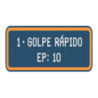
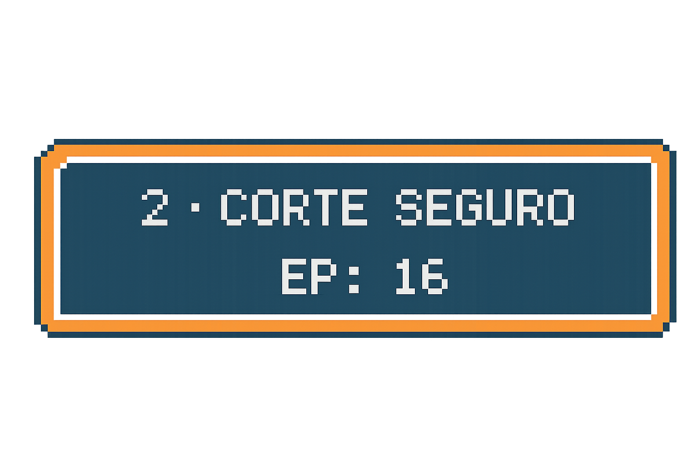
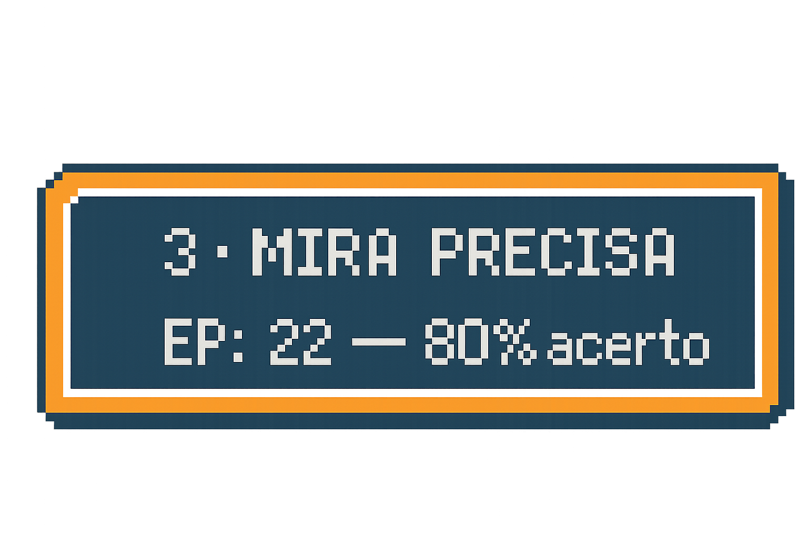
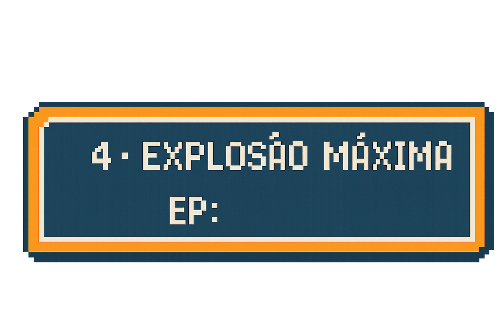

Mini-Game: Batalha por Turnos
⚙️
Posição atual:
0
Jogador
HP
100 / 100
EP
50 / 50
Inimigo (HDD)
HP
100 / 100
EP
50 / 50
VS
Turno: Jogador




R • Reiniciar
Resultado
OK
Configurações
Animações
Volume (sons opcionais)
(sons não inclusos por padrão — deixe 0)
Parâmetros (balanceamento)
Fechar